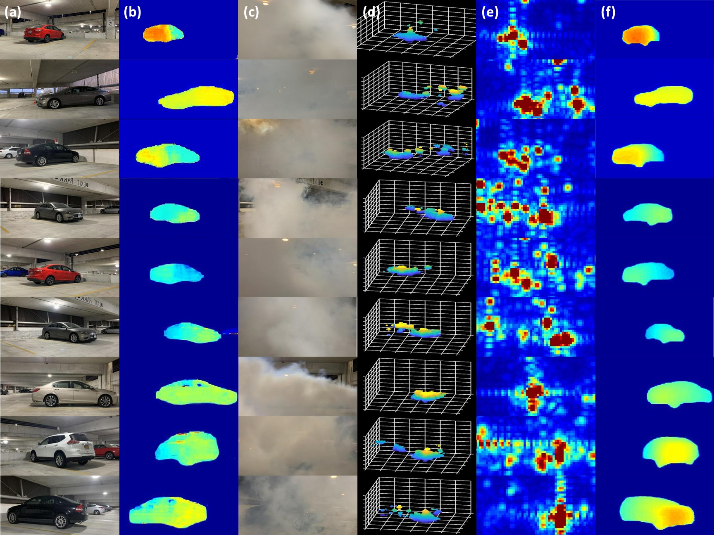
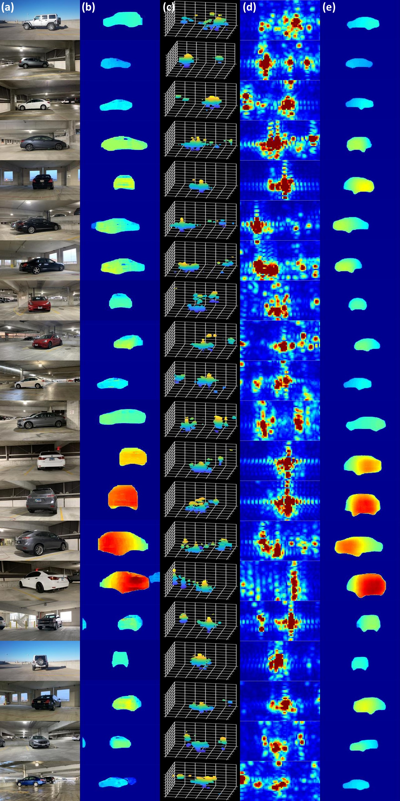
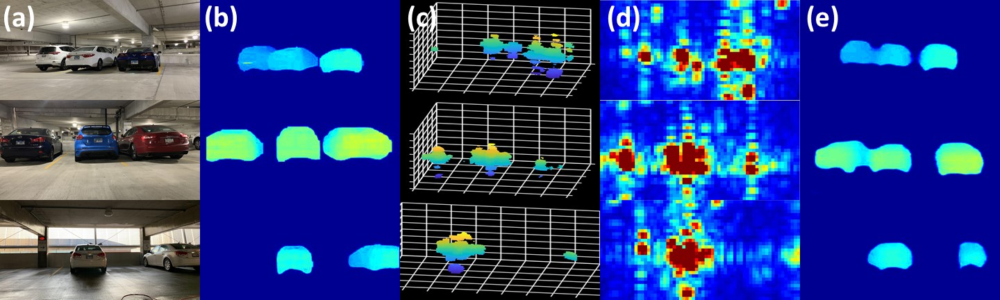
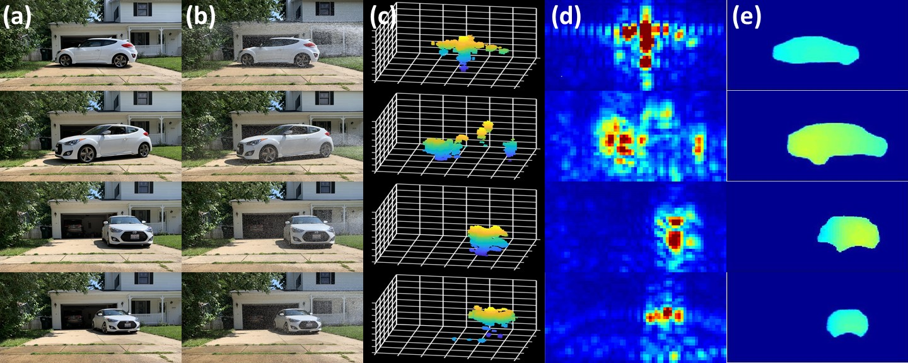
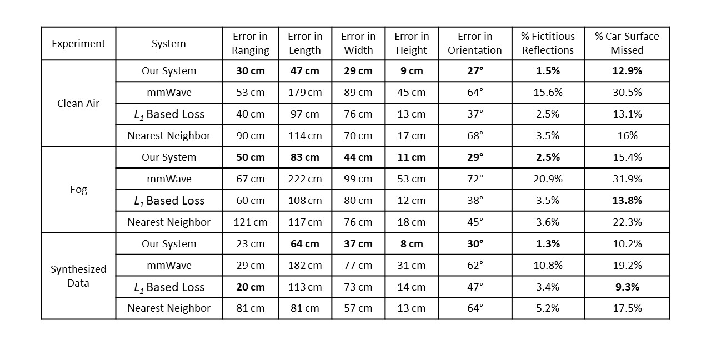

[GitHub]
Results
We show the performance of HawkEye in fog, clear weather, and rain in the following figures:
Performance with fog in scene:

Column (a) shows the original scene. Column (b) shows the corresponding ground truth. Column (c) shows the scene with fog.
Column (d) and (e) show the radar heatmap in the form of 3D point-cloud and 2D front-view projection respectively.
Column (f) shows the output of HawkEye.
Randomly sampled qualitative results:

Column (a) shows the original scene. Column (b) shows the corresponding ground truth.
Column (c) and (d) show the radar heatmap in the form of 3D point-cloud and 2D front-view projection respectively.
Column (e) shows the output of HawkEye.
Performance with multiple cars in the scene:

Column (a) shows the original scene. Column (b) shows the corresponding ground truth.
Column (c) and (d) show the radar heatmap in the form of 3D point-cloud and 2D front-view projection respectively.
Column (e) shows the output of HawkEye.
Performance with rain in scene:

Column (a) shows the original scene. Column (b) shows the scene with rain.
Column (c) and (d) show the radar heatmap in the form of 3D point-cloud and 2D front-view projection respectively.
Column (e) shows the output of HawkEye.
Quantitative Results:
We evaluate accuracy in range, size (length, width, height), and orientation of the car captured by HawkEye.
We also evaluate accuracy in shape prediction by comparing the percentage of Car’s Surface Missed (false negatives) and
the percentage of Fictitious Reflections (false positives) along the front view of the scen.

University of Illinois at Urbana Champaign | SyNRG